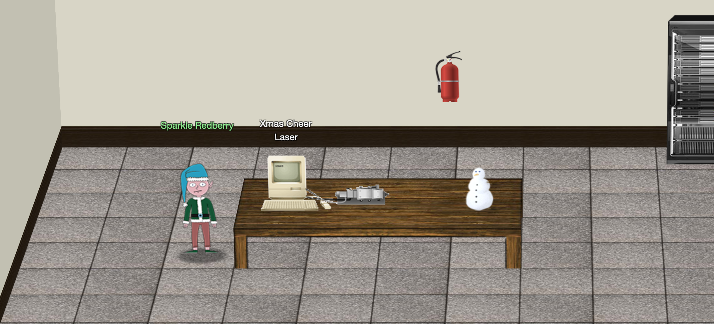
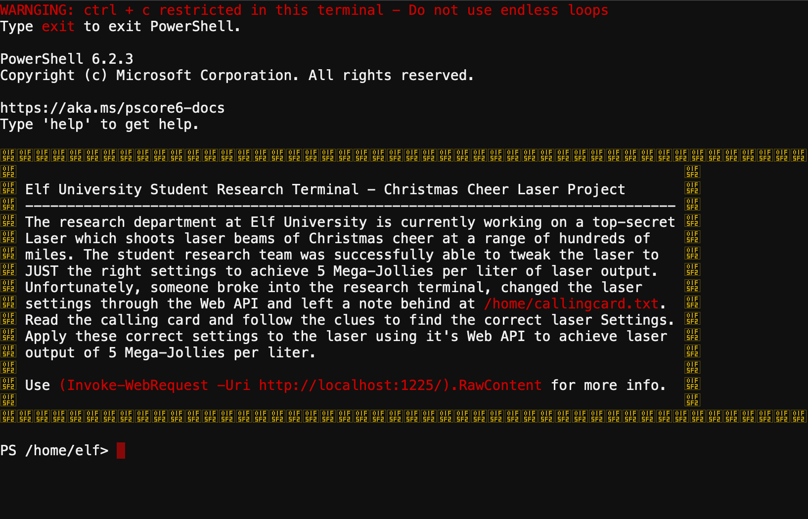

Xmas laser cheers
🎮 Xmas Cheer Laser¶
📍 The Laboratory

🧝🏻♂️ Sparkle Redberry
I'm Sparkle Redberry and Imma chargin' my laser!
Problem is: the settings are off.
Do you know any PowerShell?
It'd be GREAT if you could hop in and recalibrate this thing.
It spreads holiday cheer across the Earth ...
... when it's working!
PowerShell
Make the laser work by putting the correct settings.
⚡️ Solution¶
When You open the Cranberry Pi terminal, You see:

With given hints and Powershell Cheat Sheet, let's begin:
1. Check the Web API info¶
to know what settings we are looking for:
(Invoke-WebRequest -Uri http://localhost:1225/).RawContent
---------------------------------------------------- Christmas Cheer Laser Project Web API ---------------------------------------------------- Turn the laser on/off: GET http://localhost:1225/api/on GET http://localhost:1225/api/off Check the current Mega-Jollies of laser output GET http://localhost:1225/api/output Change the lense refraction value (1.0 - 2.0): GET http://localhost:1225/api/refraction?val=1.0 Change laser temperature in degrees Celsius: GET http://localhost:1225/api/temperature?val=-10 Change the mirror angle value (0 - 359): GET http://localhost:1225/api/angle?val=45.1 Change gaseous elements mixture: POST http://localhost:1225/api/gas POST BODY EXAMPLE (gas mixture percentages): O=5&H=5&He=5&N=5&Ne=20&Ar=10&Xe=10&F=20&Kr=10&Rn=10 ----------------------------------------------------
So we have 4 settings: Lense, Temperature, Angle, Gaseous Mixture
2. The clues hunting¶
by reading callingcard.txt :
Get-Content /home/callingcard.txt
The
Get-Contentcmdlet gets the content of the item at the location specified by the path.1
What's become of your dear laser?
Fa la la la la, la la la la
Seems you can't now seem to raise her!
Fa la la la la, la la la la
Could commands hold riddles in hist'ry?
Fa la la la la, la la la la
Nay! You'll ever suffer myst'ry!
Fa la la la la, la la la la
Clue
Commands history
3. Check Powershell Commands history:¶
Get-History
The
Get-Historycmdlet gets the session history.1
Id CommandLine -- ----------- 1 Get-Help -Name Get-Process 2 Get-Help -Name Get-* 3 Set-ExecutionPolicy Unrestricted 4 Get-Service | ConvertTo-HTML -Property Name, Status > C:\services.htm 5 Get-Service | Export-CSV c:\service.csv 6 Get-Service | Select-Object Name, Status | Export-CSV c:\service.csv 7 (Invoke-WebRequest http://127.0.0.1:1225/api/angle?val=65.5).RawContent 8 Get-EventLog -Log "Application" 9 I have many name=value variables that I share to applications system wide. At a command I will reveal my secrets once you Get my Child Items.
Angle value
65.5
Clue
I have many name=value variables
Values Format is name=value
that I share to applications system wide.
At a command I will reveal my secrets once you Get my Child Items.
🤔 maybe environment variables2
4. Get the environment variables¶
Get-ChildItem Env: | Format-Table -Wrap
The
Get-ChildItemcmdlet gets the items and child items in specified locations1.
The Environment provider exposes its data store in theEnv:drive3.
-WrapWrappingFormat-TableOutput in Columns1 to view the full output text.
Name Value
---- -----
_ /bin/su
DOTNET_SYSTEM_GLOBALIZATION_IN false
VARIANT
HOME /home/elf
HOSTNAME 5b3974b0cb32
LANG en_US.UTF-8
LC_ALL en_US.UTF-8
LOGNAME elf
MAIL /var/mail/elf
PATH /opt/microsoft/powershell/6:/usr/local/sbin:/usr/local/bin:/usr/sbin:/usr/bin:/sbin:/bin:/usr/games:/usr/local/games
PSModuleAnalysisCachePath /var/cache/microsoft/powershell/PSModuleAnalysisCache/ModuleAnalysisCache
PSModulePath /home/elf/.local/share/powershell/Modules:/usr/local/share/powershell/Modules:/opt/microsoft/powershell/6/Modules
PWD /home/elf
RESOURCE_ID undefined
riddle Squeezed and compressed I am hidden away. Expand me from my prison and I will show you the way.Recurse through all /etc and Sort on my LastWriteTime to reveal im the newest of all.
SHELL /home/elf/elf
SHLVL 1
TERM xterm
USER elf
userdomain laserterminal
USERDOMAIN laserterminal
username elf
USERNAME elf
Clue
Squeezed and compressed I am hidden away.Expand me from my prison and I will show you the way.
Recurse through all /etc and Sort on my LastWriteTime to reveal im the newest of all.
5. Escape the riddle from the prison 🚓¶
Search for last edited ChildItem in /etc directory:
Get-ChildItem /etc -Recurse -File -ErrorAction SilentlyContinue | Sort-Object -Property LastWriteTime -Descending | Select-Object -first 1
-Forceparameter allows the cmdlet to get items that cannot otherwise not be accessed by the user, such as hidden or system files.
-recurseparameter gets items from the Path directory and its subdirectories.
-ErrorActionPS uses this to determine what action should be taken if an error is thrown.
SilentlyContinuedo not display the error and continue with processing.
Sort-Objectsorting result byLastWriteTimeand-DescendingthenSelect-Object -first 1display only first from the beginning.
Directory: /etc/apt Mode LastWriteTime Length Name ---- ------------- ------ ---- --r--- 1/6/20 3:56 PM 5662902 archive
Alternative method
We could use -Attributes with Get-ChildItem to find Compressed or Archive items if the Mode property is set1.
In above file r (read-only) flag is set and there is no a (archive)flag.
Expand(uncompress) this archive:
Expand-Archive -Path /etc/apt/archive -DestinationPath /home/elf/archive
The
Get-ChildItemcmdlet Extracts files from a specified archive (zipped) file4.
/home/elf/archivewe selected this path because we have write access to it.
List all Extracted items:
Get-ChildItem /home/elf/archive
Directory: /home/elf/archive Mode LastWriteTime Length Name ---- ------------- ------ ---- d----- 1/6/20 4:06 PM refraction
Get-ChildItem /home/elf/archive/refraction
Directory: /home/elf/archive/refraction Mode LastWriteTime Length Name ---- ------------- ------ ---- ------ 11/7/19 11:57 AM 134 riddle ------ 11/5/19 2:26 PM 5724384 runme.elf
Read content of riddle file, and will runme.elf later:
Get-Content /home/elf/archive/refraction/riddle
Very shallow am I in the depths of your elf home. You can find my entity by using my md5 identity: 25520151A320B5B0D21561F92C8F6224
Clue
An items with md5 hash 25520151A320B5B0D21561F92C8F6224 at depths of home directory.
6. Searching the depths hashes¶
Get-ChildItem -File -Recurse | Get-FileHash -Algorithm MD5 | Where-Object hash -eq 25520151A320B5B0D21561F92C8F6224 | Select-Object path
-Fileparameter to get a list of files.
TheGet-FileHashcmdlet Computes the hash value for a file by using a specified hash algorithm.
-Algorithm MD5parameter to specify md5 as our hash algorithm.
TheWhere-Objectcmdlet Selects objects from a collection based on their property values which we specified ashash.
-eqparameter Indicates that this cmdlet gets objects if the property value is the same as the specified value25520151A320B5B0D21561F92C8F6224.
Select-Object pathto display the path of the object.
/home/elf/depths/produce/thhy5hll.txt
Read content of thhy5hll.txt file:
Get-Content /home/elf/depths/produce/thhy5hll.txt
temperature?val=-33.5 I am one of many thousand similar txt's contained within the deepest of /home/elf/depths. Finding me will give you the most strength but doing so will require Piping all the FullName's to Sort Length.
Temperature value
-33.5
Clue
Piping all the FullName's to Sort Length for all files in /home/elf/depths.
Alternative approach by searching for val= in files at current directory
Get-ChildItem -recurse | Select-String -pattern 'val='
The
Select-Stringcmdlet finds text in strings and files.1
-patternparameter specify text text patterns.1
depths/produce/thhy5hll.txt:1:temperature?val=-33.5
7. Searching the one among thousands¶
Get-ChildItem -File -recurse | Select-Object FullName,@{Name="NameLength";Expression={$_.fullname.length}} | Sort-Object NameLength -Descending | Select-Object -first 1 | Format-Table -Wrap
Get all files recursively and get
FullNamefor each and then getName Lengthand sort by it and return the first one on the result.5
/home/elf/depths/larger/cloud/behavior/beauty/enemy/produce/age/chair/unknown/escape/vote/long/writer/behind/ahead/thin/occasionally/explore/tape/wherever/practical/therefore/cool/plate/ice/play/truth/potatoes/beauty/fourth/careful/dawn/adult/either/burn/end/accurate/rubbed/cake/main/she/threw/eager/trip/to/soon/think/fall/is/greatest/become/accident/labor/sail/dropped/fox/0jhj5xz6.txt
Read content of 0jhj5xz6.txt file:
Get-Content /home/elf/depths/larger/cloud/behavior/beauty/enemy/produce/age/chair/unknown/escape/vote/long/writer/behind/ahead/thin/occasionally/explore/tape/wherever/practical/therefore/cool/plate/ice/play/truth/potatoes/beauty/fourth/careful/dawn/adult/either/burn/end/accurate/rubbed/cake/main/she/threw/eager/trip/to/soon/think/fall/is/greatest/become/accident/labor/sail/dropped/fox/0jhj5xz6.txt
Get process information to include Username identification. Stop Process to show me you're skilled and in this order they must be killed: bushy alabaster minty holly Do this for me and then you /shall/see.
Clue
Get process information to include Username identification
Clue
Kill Process in order:
bushy > alabaster > minty > holly >
Check this file /shall/see
8. Killing order!¶
Get-Process -IncludeUserName
The
Get-Processcmdlet Gets the processes that are running on the local computer.
-IncludeUserNameparameter shows the owner of a process.
WS(M) CPU(s) Id UserName ProcessName ----- ------ -- -------- ----------- 28.71 1.57 6 root CheerLaserServi 112.95 3.31 31 elf elf 3.44 0.02 1 root init 0.80 0.00 24 bushy sleep 0.73 0.00 26 alabaster sleep 0.77 0.00 27 minty sleep 0.81 0.00 29 holly sleep 3.28 0.00 30 root su
Stop process in order bushy > alabaster > minty > holly :
Stop-Process 23; Stop-Process 25; Stop-Process 28; Stop-Process 29
Alternative method
Because it's a linux box, we can use kill command instead:
kill 23; kill 25; kill 28; kill 29
Read content of /shall/see file:
Get-Content /shall/see
Get the .xml children of /etc - an event log to be found. Group all .Id's and the last thing will be in the Properties of the lonely unique event Id.
Clue
Lookup xml file in /etc
Check the properties for the event with unique event Id
9. Find the Unique!¶
Search for xml files in /etc recursively:
Get-ChildItem /etc -Recurse -File -Filter "*.xml" -ErrorAction SilentlyContinue
-Filterparameter to get only.xmlfiles.
Directory: /etc/systemd/system/timers.target.wants Mode LastWriteTime Length Name ---- ------------- ------ ---- --r--- 11/18/19 7:53 PM 10006962 EventLog.xml
Let's read the first 15 lines from the file to understand the content and structure:
Get-Content -Path /etc/systemd/system/timers.target.wants/EventLog.xml -first 15
<Objs Version="1.1.0.1" xmlns="http://schemas.microsoft.com/powershell/2004/04"> <Obj RefId="0"> <TN RefId="0"> <T>System.Diagnostics.Eventing.Reader.EventLogRecord</T> <T>System.Diagnostics.Eventing.Reader.EventRecord</T> <T>System.Object</T> </TN> <ToString>System.Diagnostics.Eventing.Reader.EventLogRecord</ToString> <Props> <I32 N="Id">3</I32> <By N="Version">5</By> <Nil N="Qualifiers" /> <By N="Level">4</By> <I32 N="Task">3</I32> <I16 N="Opcode">0</I16>
Namespace http://schemas.microsoft.com/powershell/2004/04 will be used in Select-Xml.Also
XPath to the id string Objs/Obj/Props/I32[@N="Id"].
Open xml file into xml element then extract and count event id to find unique one:
$namespaceManager = New-Object System.Xml.XmlNamespaceManager($xml.NameTable) $namespaceManager.AddNamespace('ns', 'http://schemas.microsoft.com/powershell/2004/04') [xml]$Xml = Get-Content /etc/systemd/system/timers.target.wants/EventLog.xml $Xml.SelectNodes("ns:Objs/ns:Obj/ns:Props/ns:I32[@N='Id']", $namespaceManager).InnerText | Group-Object | Select-Object -Property Count, Name | Sort-Object -Property Count
[xml]$XmlGet content from the XML file provided as XMl.
SelectNodesSelects a list of nodes matching the XPath expression with prefixes supplied by XmlNamespaceManager.
namespaceManagerSpecifies a hash table of the namespaces used in the XML.
'ns:Objs/ns:Obj/ns:Props/ns:I32[@N='Id']' Specifies an XPath search query.
Alternative method
Using Select-Xml cmdlet:
Select-Xmlcmdlet lets you use XPath queries to search for text in XML.
-Namespaceparameter Specifies a hash table of the namespaces used in the XML.
-Pathparameter Specifies the path and file names of the XML files to search.
-XPathparameter Specifies an XPath search query.
$Path = '/etc/systemd/system/timers.target.wants/EventLog.xml'; $Namespace = @{ns="http://schemas.microsoft.com/powershell/2004/04"}; Select-Xml -Path $Path -XPath '/ns:Objs/ns:Obj/ns:Props/ns:I32[@N="Id"]' -Namespace $Namespace | %{$_.node.InnerXML} | Group-Object | Select-Object -Property Count, Name | Sort-Object -Property Count
Count Name
----- ----
1 1
2 4
39 2
98 6
179 3
905 5
1 is only occurs once.
Let's get the properties of the object:
$Xml.SelectNodes("ns:Objs/ns:Obj/ns:Props[ns:I32[@N='Id']=1]", $namespaceManager).LastChild.InnerXml
Alternative method
Using Select-Xml cmdlet:
$Path = '/etc/systemd/system/timers.target.wants/EventLog.xml'; $Namespace = @{ns="http://schemas.microsoft.com/powershell/2004/04"}; Select-Xml -Path $Path -XPath "ns:Objs/ns:Obj/ns:Props[ns:I32[@N='Id']=1]" -Namespace $Namespace | %{$_.node.InnerXML}
<S N="Value"> C:\Windows\System32\WindowsPowerShell\v1.0\powershell.exe -c "` $correct_gases_postbody = @{`n O=6`n H=7`n He=3`n N=4`n Ne=22`n Ar=11`n Xe=10`n F=20`n Kr=8`n Rn=9`n}`n" </S>
Also if you used .ParentNode.LastChild.InnerXml :
<S N="Message" xmlns="http://schemas.microsoft.com/powershell/2004/04"> Process Create:_x000D__x000A_RuleName: _x000D__x000A_UtcTime: 2019-11-07 17:59:56.525_x000D__x000A_ProcessGuid: {BA5C6BBB-5B9C -5DC4-0000-00107660A900}_x000D__x000A_ProcessId: 3664_x000D__x000A_Image: C:\Windows\System32\WindowsPowerShell\v1.0\powershell.exe_x000D__x000A_FileVersion: 10.0.14393.206 (rs1_release.160915-0644)_x000D__x000A_Description: Windows PowerShell_x000D__x000A_Product: Microsoft® Windows® Operating System_x000D__x000A_Company: Microsoft Corporation_x000D__x000A_OriginalFileName: PowerShell.EXE_x 000D__x000A_CommandLine: C:\Windows\System32\WindowsPowerShell\v1.0\powershell.exe -c "`$correct_gases_postbody = @{`n O=6`n H=7`n He=3`n N=4`n Ne=22`n Ar=11`n Xe=10`n F=20`n Kr=8`n Rn=9`n}`n" _x000D__x000A_CurrentDirectory: C:\_x000D__x000A_User: ELFURESEARCH\allservices_x000D__x000A_LogonGuid: {BA5C6BBB-5B9C-5DC4-0000-0020F55CA900}_x000D__x000A_LogonId: 0xA95CF 5_x000D__x000A_TerminalSessionId: 0_x000D__x000A_IntegrityLevel: High_x000D__x000A_Hashes: MD5=097CE5761C89434367598B34FE32893B_x000D__x000A_ParentProcessGuid: {BA5C6BBB-4C79-5DC4-0000-001029350100 }_x000D__x000A_ParentProcessId: 1008_x000D__x000A_ParentImage: C:\Windows\System32\svchost.exe_x000D__x000A_ParentCommandLine: C:\Windows\system32\svchost.exe -k netsvcs </S>
Correct gases post-body
@{ O=6 H=7 He=3 N=4 Ne=22 Ar=11 Xe=10 F=20 Kr=8 Rn=9}
10. The Mix LinuxPower!¶
Going back to runme.elf in archive/refraction directory:
.elf files is Executable and Linkable Format7 can store executable programs, memory dumps, and shared libraries.
If we try to run it:
./runme.elf
Program runme.elf failed to run
Program 'runme.elf' failed to run: No such file or directoryAt line:1 char:1 + ./runme.elf + ~~~~~~~~~~~. At line:1 char:1 + ./runme.elf + ~~~~~~~~~~~ + CategoryInfo : ResourceUnavailable: (:) [], ApplicationFailedException + FullyQualifiedErrorId : NativeCommandFailed
So using chmod +x command to changed to an executable then rerun it:
chmod +x ./runme.elf
./runme.elf
refraction?val=1.867
Refraction
1.867
11. Fixing the laser¶
Now we have all the values let's fix the laser and spread the cheers!
| Angle | Temperature | Refraction | Gasses |
|---|---|---|---|
| 65.5 | 33.5 | 1.867 | @{O=6;H=7;He=3;N=4;Ne=22;Ar=11;Xe=10;F=20;Kr=8;Rn=9} |
Let's put all values with api links provided to update the settings.
We have the settings Angle, Temperature and Refraction are sent with GET HTTP Request. And Gasses are sent with POST HTTP Request. In Powershell to send http request we use Invoke-WebRequest cmdlet8.
Request Example:
Invoke-WebRequest -Uri http://xxxx -Method xxx -Body xxx
-MethodSpecifies the method used for the web request. There are a lot of acceptable values for this parameter, in our case we will use POST or GET
-BodySpecifies the body of the request. When the input is a GET request and the body is an IDictionary (typically, a hash table), the body is added to the URI as query parameters. For other request types (such as POST), the body is set as the value of the request body in the standard name=value format.
In case of sending GET HTTP Request you can add query parameters directly to URI and type the command without -Body parameter.
Our command will be:
$r = 1.867; $t =-33.5; $a =65.5 ; $g = @{O=6; H=7; He=3; N=4; Ne=22; Ar=11; Xe=10; F=20; Kr=8; Rn=9} ; (Invoke-WebRequest -Uri http://localhost:1225/api/off/).Content ; (Invoke-WebRequest -Uri http://localhost:1225/api/on/).Content ; (Invoke-WebRequest -Uri http://localhost:1225/api/temperature?val=$t).Content ; (Invoke-WebRequest -Uri http://localhost:1225/api/angle?val=$a).Content ; (Invoke-WebRequest -Uri http://localhost:1225/api/gas -Method POST -Body $g).Content ; (Invoke-WebRequest -Uri http://localhost:1225/api/refraction?val=$r ).Content ; (Invoke-WebRequest -Uri http://localhost:1225/api/output).Content;
Grouped all commands to quickly excute and also changed
RawContenttoContentto get only content as ouput.
Christmas Cheer Laser Powered Off Christmas Cheer Laser Powered On Updated Laser Temperature - Check /api/output if 5 Mega-Jollies per liter reached. Updated Mirror Angle - Check /api/output if 5 Mega-Jollies per liter reached. Updated Gas Measurements - Check /api/output if 5 Mega-Jollies per liter reached. Updated Lense Refraction Level - Check /api/output if 5 Mega-Jollies per liter reached. Success! - 5.78 Mega-Jollies of Laser Output Reached!
Success! - 5.78 Mega-Jollies of Laser Output Reached!
You have completed the Xmas Cheer Laser challenge! 🎉
Talk to SugarPlum Mary again:
🧝🏻♂️ Sparkle Redberry
You got it - three cheers for cheer!
For objective 5, have you taken a look at our Zeek logs?
Something's gone wrong. But I hear someone named Rita can help us.
Can you and she figure out what happened?
Check your badge for the hints:
RITA
🎓 What you've learned¶
- Different Powershell cmdlets:
Get-Content,Get-History,Get-ChildItem,Sort-Object,Invoke-WebRequestExpand-Archive,Get-FileHash,Where-Object,Group-Object,Select-String,Get-Process,Stop-Process,Select-Xml,SelectNodes. - Formatting the Powershell command output:
Format-Table - Searching for files using
hashes,strings,LastWriteTime,Name Length. - The environment variables.
- How to get Commands history.
- Gets the processes that are running on the local computer and how to stop any process.
- Dealing with xml files in Powershell.
- How to change binaries to executable and run them.
- Sending Http requests from Powershell.
-
https://docs.microsoft.com/en-us/powershell/module/Microsoft.PowerShell.Core/?view=powershell-6 ↩↩↩↩↩↩↩
-
https://docs.microsoft.com/en-us/powershell/module/microsoft.powershell.core/about/about_environment_variables?view=powershell-6 ↩
-
https://docs.microsoft.com/en-us/powershell/module/microsoft.powershell.core/about/about_environment_provider?view=powershell-6 ↩
-
https://docs.microsoft.com/en-us/powershell/module/Microsoft.PowerShell.Archive/Expand-Archive?view=powershell-6 ↩
-
https://www.petri.com/powershell-problem-solver-finding-long-file-names ↩
-
https://www.youtube.com/watch?v=AcR9UvEnW98
https://www.w3schools.com/xml/xpath_intro.asp
https://www.red-gate.com/simple-talk/sysadmin/powershell/powershell-data-basics-xml/
https://docs.microsoft.com/en-us/dotnet/api/system.xml.xmlnode.selectnodes?view=netframework-4.8
https://www.youtube.com/watch?v=Ukuj_DxueIc
https://docs.microsoft.com/en-us/dotnet/api/system.xml.xmlnode.lastchild?view=netframework-4.8 ↩
-
https://en.wikipedia.org/wiki/Executable_and_Linkable_Format ↩
-
https://docs.microsoft.com/en-us/powershell/module/microsoft.powershell.utility/invoke-webrequest?view=powershell-6 ↩